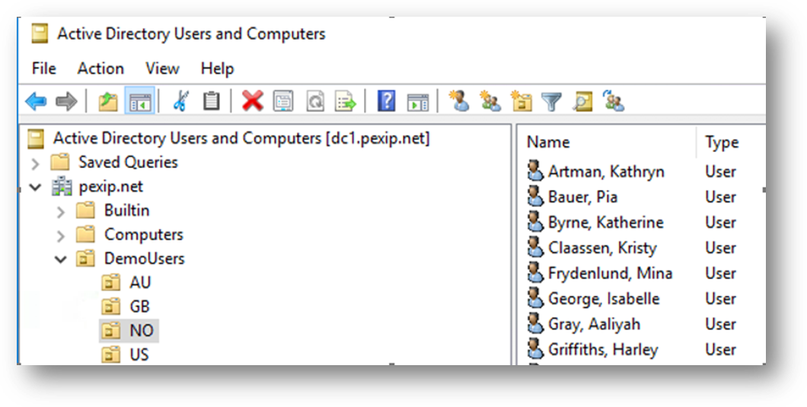

Use section #10 and section #9of the lab sheet.
This LDAP integration can use a separate directory to that used for LDAP administrator authentication. You need to configure two things, an LDAP sync source and an LDAP sync template:
In addition, you can add additional fields from the LDAP database within the LDAP template beyond those defined "out of the box" (although this is not something you will do in this exercise).
Refer to https://docs.pexip.com/admin/vmr_syncing.htm and https://docs.pexip.com/admin/sync_patterns.htm. In addition, LDAP syntax can be quirky, so referring to our LDAP troubleshooting guide can be a lifesaver (see https://docs.pexip.com/admin/integrate_ldap_troubleshooting.htm).
You can see the Active Directory Users and Computers window for the pexip.net domain in the image below, specifically in Norway OU. There are employees in 4 countries seen under pexip.net --> DemoUsers, where there are the Organisation Units (OUs) AU, GB, NO and US.

You will need to create an LDAP sync template using the above source to create VMRs for the users in Norway, then later users in other countries.
The users in Norway are in the LDAP path (know as the Distinguished Name or DN): OU=NO,OU=DemoUsers,DC=pexip,DC=net
The latter part of this DN should already be in the sync source as the Base DN and is therefore not needed in a relative path.
In an ideal world, LDAP databases/Active Directory should be clean and tidy with the same data formats used for the same fields. Unfortunately, this is rarely the case. Therefore, it is in your interest to do an initial LDAP sync without specifying fields to create any VMR aliases. Instead, you can use other fields in the sync template (often the VMR Name and b fields) to temporarily collect the LDAP data, then see what could be used to construct valid aliases.
See if you can answer this question. It will help you extract data from the LDAP directory.
Once you have constructed and saved the initial template (without anything specified in the VMR alias fields), return to the template and click the Sync Now button.
Have a look at Services --> Virtual Meeting Rooms to see if any information has been imported. You should see that none of the VMRs have aliases. However, the VMR names and description fields contain the information extracted from AD, and perhaps you can use some of these LDAP fields to create the required VMR aliases.
To filter, clean and alter the LDAP data, refer to the documentation linked previously.
For this exercise, we want to construct two aliases for each user's VMR:
When examining the LDAP data in the VMR name and description fields, you may notice that the users have email addresses, although these use the domain portion @pexip.net.
For the numeric alias, the prefix for Norwegian users should be 947. In addition, you may notice several possible LDAP fields with valuable data, such as the employeeID or telephoneNumber.
A Norwegian user should eventually have a VMR with two aliases:
Now add similar Sync Templates for Australia, Great Britain and the United States. Users in each country should have the following prefixes: